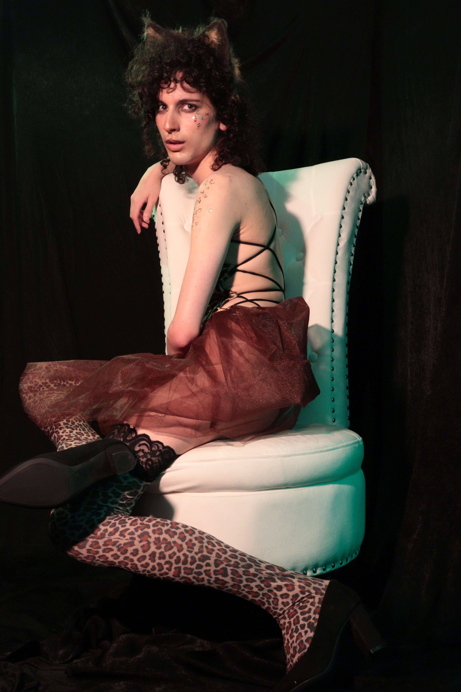
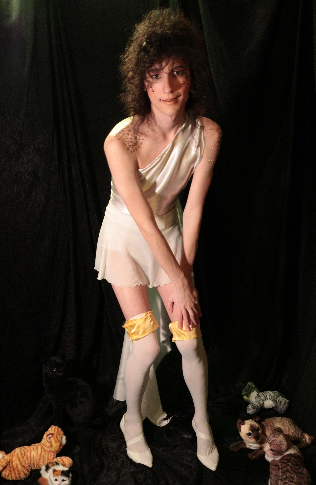

Photography for Self Esteem (sadposting)
December 11, 2023
It's hard to imagine that there are people who do not hate their bodies. How can it be that not everykitty wishes they were a woman, or if they already are a woman, not a prettier woman? I've thought about this every single morning and night, and much of the time in between, for the past five or six years. I am so depressed by looking and sounding hideous that it's paralyzing. I usually have no motivation to live my life this way, and rather stay in bed under my covers for several hours in the morning fantasizing about how much happier I would be if I lived as a woman. I get so sad that, sometimes, I will even do this in the middle of a day. Sometimes I pretend I was a cisgender woman, sometimes I imagine myself just passing better as a transgender woman, but either way I spend hours hiding from the reality that everykitty I know thinks I'm irrefutably male.
Some very kind people are willing to pretend for my sake, but most will not, or will not consistently. A portion will immediately feel embarassed when they misgender me, and either apologize or act awkwardly, but in all of these cases, I am still aware that nokitty believes I'm a real woman. I have little to do besides spend much time every day surfing the Internet, which obviously does not improve a trans kitty's self esteem or optimism much either.
I don't know how to live like this forever, but I'm desperately searching for answers. Among my ideas this year have been to practice an effeminate voice, to practice feminizing makeup, to improve the horrid state of my skin care, and to feel sexually desired. I'm still sad every day, but I feel proud for making progress on each of these. I also began HRT but lost my health insurance shortly thereafter.
Prior to this year, nokitty has ever been attracted to me. I actually mean that. Exactly nokitty (who had met me in real life) had ever indicated that I am desirable. I have received many compliments for my curly hair from strangers my entire life, but no one had ever asked me on a date, regularly wanted me involved in something more casual (I was completely friendless in high school and college), or told me that I am attractive in any way besides my hair and clothing, or complimented me in any flirtatious way whatsoever. In this way, by age 23, I had missed many developmental milestones, and most people were shocked if I told them the extent to which I have been undesired and that, obviously, I had never had a sexual partner either. Many adults are empathetic for missing signals and chances to date in their adolescence, but I truly received no signals to miss.
Briefly in college, I knew a classmate who I suspected might be into me. She was aggresively in my space, spontaneously opened my phone when she wanted to know what my lock screen is, complimented my clothing often, and groped my body and butt sometimes. I was initially unsure what this meant, but once I met her friend group, I realized that she is just like that. For a Halloween party, I dressed in my cutest outfit thus far, a skimpy take on Koons' Rabbit on the right, and the president of my school's pride club complimented me highly. She told me days later that she was still thinking often about what I had worn. I doubt that was meant in any flirtatious way, since she is lesbian and I looked cute, yet clearly masculine. These are the very closest I had ever gotten to a flirtatious comment in real life from anykitty prior to this year.
My sister once had a professional portrait photograph taken of her and framed for some reason that I forgot (maybe it was part of a yearbook). I was very envious of how good the portrait looked and felt embarassed by how sloppy every photograph of me was. Between my costuming experience growing up, my recent grind on makeup and sewing, and my confidence that I could learn any skill at a basic level, I decided that I could create nice photographs for myself too. I spent a lot of time, effort, and money (probably around $2k) arranging a home media studio for costume photoshoots, and then I incrementally purchased more and more costumes as retail therapy. I believed that making decent-quality provocative photographs would get more attention for my unusually overlooked dating profiles. At the same time, I had been going through an extreme bout of social isolation by not socializing with a single person where I lived for five months. I was very lonely and thought that feeling sexually desirable could remedy that.
 This plan kind of helped. My amateur photography had decent lighting, staging, and costuming. I have received many compliments for it online, and a few people assumed they were professionally done. One person even requested that I photograph her and her friends professionally (of course I declined, but the offer was flattering). I had sex for the first time at midnight on July 24th. Since then, I have done it twelve more times, with different men each occasion, and received far more solicitations than I could have acted upon even if I wanted to. Some of my partners have expressed that they want a closer relationship, with me as their girlfriend, but serious dating is not something I think I am emotionally capable of now, and perhaps not ever. None of them would still want me if they understood how sad, tired, and flaky I am. All of these encounters happened on Grindr, which is an unusual amount of success for that scene. Although elsewhere, I appear to be no more desirable than I ever was.
 Kind platonic friends in my city tell me that my photos are gorgeous (despite having many beginner mistakes), and will compliment my hair, clothing, and makeup when we knit together at a library or bar. But compliments on my beauty feel empty when I know that they think I am a pretty boy rather than a pretty lady. If I was actually beautiful, I would never be misgendered. Many people are easily impressed by any serious attempt at gender nonconformity, so compliments on the bravery of wearing feminine and tight or revealing clothing, or how nice my makeup is, ring hollow to me. Almost any passing woman with an aesthetic eye can do the same thing and receive far more attention for it from men than I do, anyways. I also suspect that almost any cisgender woman who puts herself in a position to receive compliments, such as browsing Tinder actively as an androphilic user, will receive more compliments from gynophilic men than I do. Even if I pass perfectly, I will always be inherently less desirable than a cisgender woman to most people who know I am trans. On message boards, even trans women who pass perfectly while nude are still much less desired than most cisgender women. Of course, this does not help my self esteem or hope for living a satisfying life. The facts are extremely depressing and make me feel worthless and pawful every day.
Kind platonic friends in my city tell me that my photos are gorgeous (despite having many beginner mistakes), and will compliment my hair, clothing, and makeup when we knit together at a library or bar. But compliments on my beauty feel empty when I know that they think I am a pretty boy rather than a pretty lady. If I was actually beautiful, I would never be misgendered. Many people are easily impressed by any serious attempt at gender nonconformity, so compliments on the bravery of wearing feminine and tight or revealing clothing, or how nice my makeup is, ring hollow to me. Almost any passing woman with an aesthetic eye can do the same thing and receive far more attention for it from men than I do, anyways. I also suspect that almost any cisgender woman who puts herself in a position to receive compliments, such as browsing Tinder actively as an androphilic user, will receive more compliments from gynophilic men than I do. Even if I pass perfectly, I will always be inherently less desirable than a cisgender woman to most people who know I am trans. On message boards, even trans women who pass perfectly while nude are still much less desired than most cisgender women. Of course, this does not help my self esteem or hope for living a satisfying life. The facts are extremely depressing and make me feel worthless and pawful every day.
Most of my sexual partners have been very polite about my gender, but some had accidentally made it clear that I do not pass to them. All in all, receiving daily compliments and admiration from strangers who want to sleep with me has helped my self esteem, but I am still constantly sad, and occasionally suicidal, because no reasonable kitty can look at me and believe that I am a real woman. Not even I can.
 I am misgendered by family members in phone calls, and my dad is especially insensitive to my need for feeling respected and beautiful. Sometimes he is even irritated by it. I cannot talk to some of grandparents because they will not even try to pretend for me. The last time that I spoke with my grandma's second husband was when he joked that my sister brought me as her "boyfriend" after I had made my very best effort to present feminine. If what I did then isn't good enough for my family, nothing I can realistically do ever will be. I cried later that day inside a resturaunt when I saw a beautiful waitress who has probably never been identified as male her entire life.
I am moving back in with my parents very soon, after having lost my job essentially because of my paralyzing insecurities and depression, and the thought of once again living with people who will, inadvertently or not, express how ugly I am every day causes me more dread than any of my other recent misfortune.
 I can't reassemble my media studio in their home, so I am done with portrait photography for the forseeable future. Although I enjoyed the attention I got from showcasing these, to my eyes they are a pathetic immitation of what I want to be. Apparently it is painful to look at even my very best self. I did not get everything out of photography that I wanted to. I did not convince anyone that I am a real woman, nor did I not convince myself that I am beautiful, and these photographic reminders of how hopeless my situation is hurt me. For posterity, I'm leaving some of the studio photographs throughout this essay and all of them following gallery, excluding ones which are particularly poorly made. I am probably quitting photography forever now.
I can't reassemble my media studio in their home, so I am done with portrait photography for the forseeable future. Although I enjoyed the attention I got from showcasing these, to my eyes they are a pathetic immitation of what I want to be. Apparently it is painful to look at even my very best self. I did not get everything out of photography that I wanted to. I did not convince anyone that I am a real woman, nor did I not convince myself that I am beautiful, and these photographic reminders of how hopeless my situation is hurt me. For posterity, I'm leaving some of the studio photographs throughout this essay and all of them following gallery, excluding ones which are particularly poorly made. I am probably quitting photography forever now.